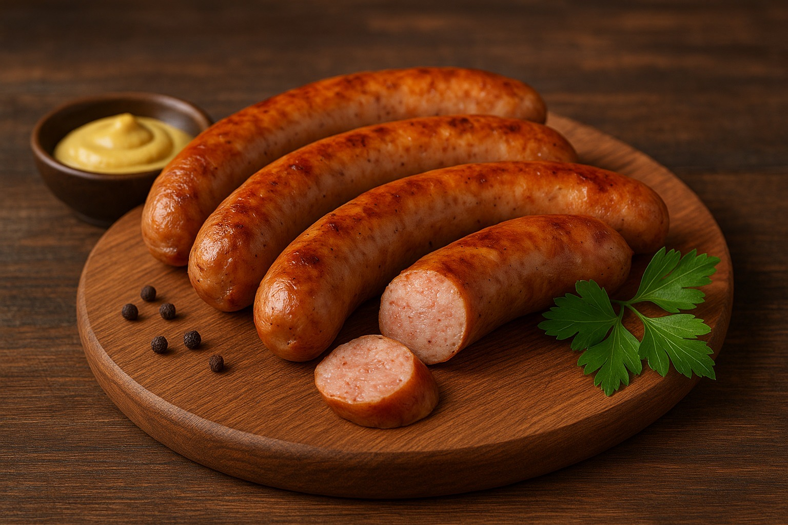
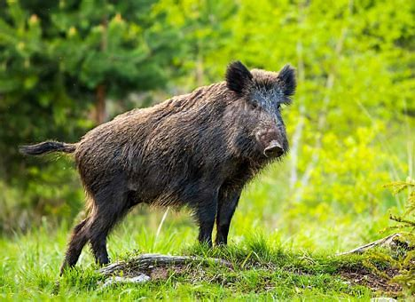

伝統衣装と織物
カヤー族の衣装は色鮮やかで、女性は赤いチュニックを着ることが多く、織り模様には村や下位集団を示す特徴があります。 織物は世代を超えて受け継がれてきた重要な伝統工芸です。
カヤー族（カレンニー族）は、主にミャンマー東部のカヤー州に暮らしています。 彼らは伝統的な衣装や音楽、そして山岳地帯での農業で知られています。 カヤーの人々は活気ある文化的な慣習を守り続け、強い民族的アイデンティティを持っています。

カヤー族（カレンニー族とも呼ばれる）は、いくつかの異なる言語や伝統を持つ複数の下位集団で構成されています。 農業、織物作り、音楽は日常生活の中心的な要素です。 この地域は山が多く、キリスト教とアニミズム（精霊信仰）が混在しています。
カヤー族の衣装は色鮮やかで、女性は赤いチュニックを着ることが多く、織り模様には村や下位集団を示す特徴があります。 織物は世代を超えて受け継がれてきた重要な伝統工芸です。
文化的な行事では、キリスト教の祝祭と伝統的なアニミズムの儀式が融合しています。
州都であり、タウンゴェ・パゴダや文化博物館があります。
カヤン族の故郷であり、伝統的な首長族の衣装で知られています。
朝市や文化祭で知られています。
カヤー州の伝統的な味は、豊かな香辛料と独特の地元の食材で知られています。

カヤー州の森林や丘陵地帯で見られる野生動物：


©2025 Group F - Tokyo Technical College